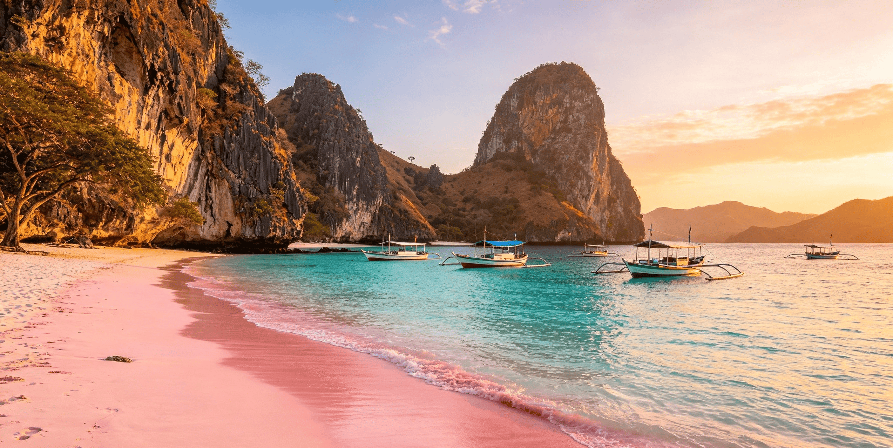
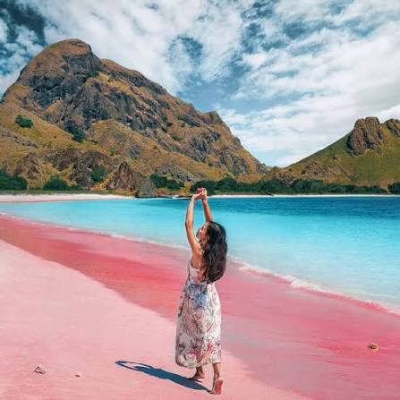
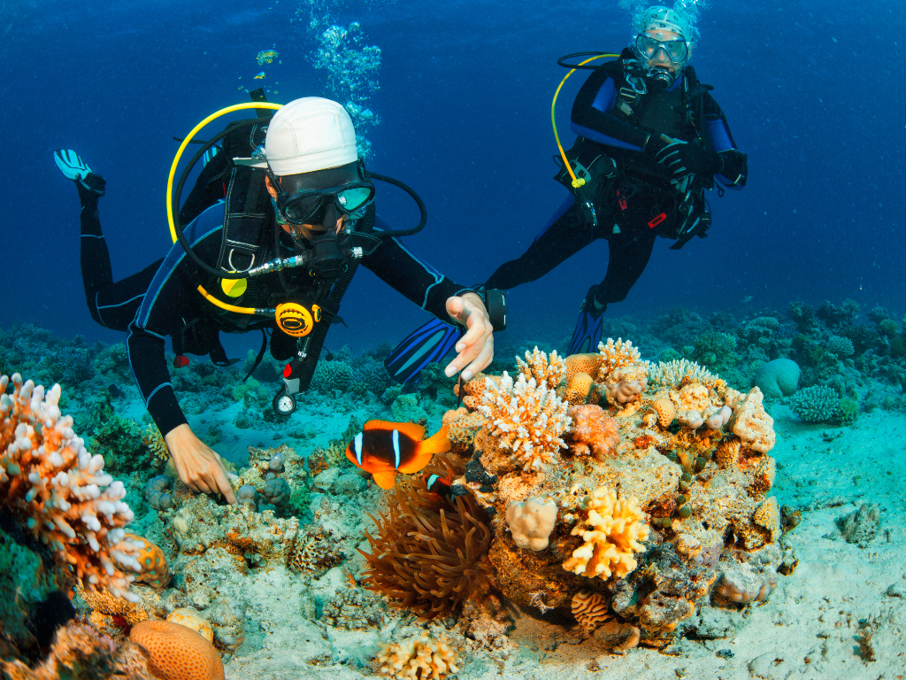
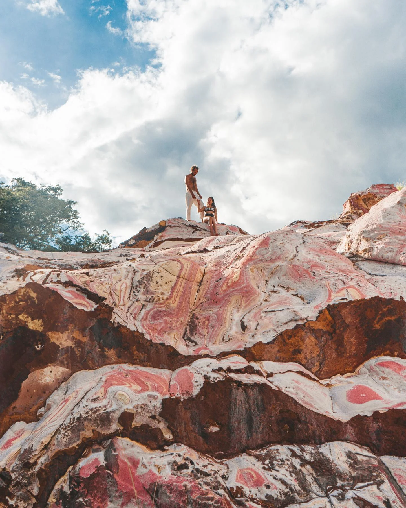

Pantai berpasir merah mudah di Taman Nasional Komodo
Pink Beach atau Pantai Merah adalah pantai unik yang berada di Pulau Komodo, Nusa Tenggara Timur, dan termasuk kawasan Taman Nasional Komodo. Pantai ini terkenal karena pasirnya yang berwarna merah muda dan air lautnya yang jernih. Warna pink pada pasir berasal dari pecahan karang merah dan organisme mikroskopis foraminifera yang bercampur dengan pasir putih, sehingga menghasilkan warna merah muda.
|
 Pemandangan indah untuk spot foto |
 Pilihan tepat untuk snorkeling |
 Bisa treking |
Pulau Komodo, Kabupaten Manggarai Barat, Nusa Tenggara Timur, Indonesia
| Kategori | Keterangan | Harga Wisatawan Domestik | Harga Wisatawan Mancanegara |
|---|---|---|---|
| Trip 1 day | Include: Antar & Jemput di Bandara, Snorkeling & perlengkapan, Konsumsi, Pemandu, Kapal, Pink Beach + Pulau Komodo + Padar + spot lainnya. | Rp 2.000.000 /org | Rp 3.000.000 /0rg |
| Trip Liveaboard 3H2M | Include: Antar & Jemput di Bandara, Hotel, Snorkeling & perlengkapan, Konsumsi, Pemandu, Kapal, Pink Beach + Pulau Komodo + Padar + spot lainnya. | Rp 6.800.000 /org | Rp 10.500.000 /0rg |